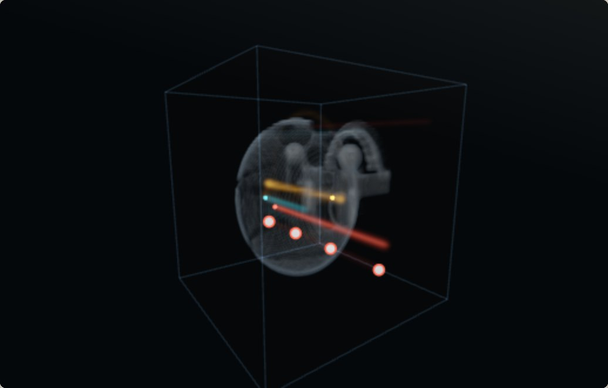
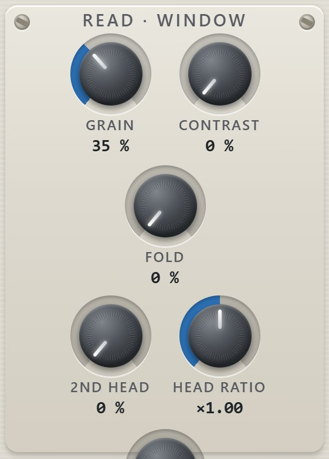
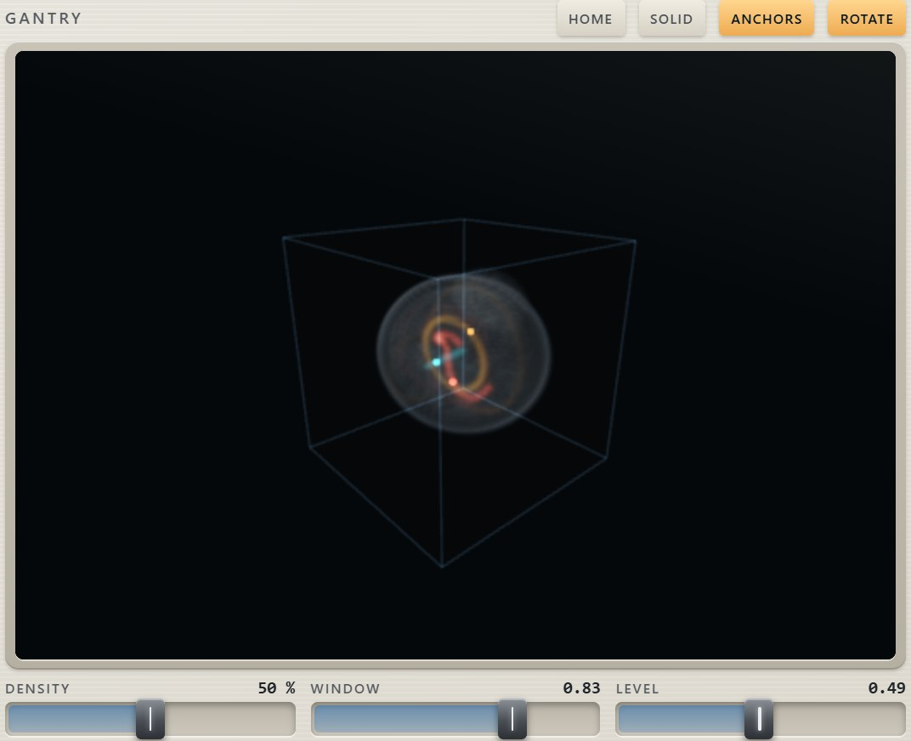
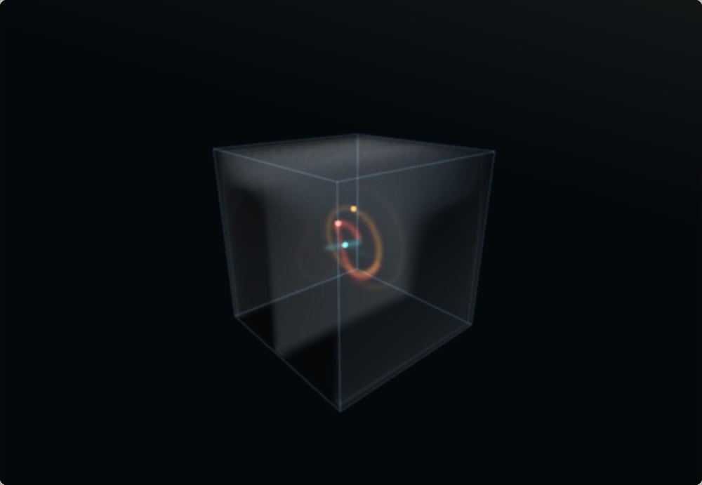

Fifteen specimens: nine phantoms and six bodies
The phantoms are formulas and promises; the bodies are anatomy in Hounsfield units, and a bone is a bone.
The x axis is the phase axis, so a straight line across the cube reads the specimen's
natural waveform and an ordinary wavetable turns out to be a special case: a straight line, moved
sideways. SPINE is a harmonic stack whose brightness and parity are the other two axes —
the instrument's bread, and the bench checks it against its own formula. PULSE is a pulse
whose duty is a coordinate. NERVE is phase modulation laid out as a landscape.
The bodies (260905.1) are built the way a scanner would record them — air at −1000 HU, fat about −90, soft tissue 40, trabecular bone a few hundred, the cortical tables above a thousand, enamel at the top of the scale. CORTEX is a head: skull with its tables and sutures, orbits with globes, sinuses, folded cortex, ventricles, cerebellum, brainstem, the jaw and both rows of teeth. SKULL is the same head with every soft tissue removed. THORAX has ribs, sternum, clavicles, a spine with its canal, two lungs with bronchi and vessels, the heart and the aorta. VERTEBRA is three lumbar levels with discs, canal, processes and the muscles round them; FEMUR a thigh with the shaft flaring into its ends; JAW the mandible with teeth of enamel, dentine and pulp. A line through any of them reads what is there — bone, then fluid, then folds, then a ventricle — and moving it an inch meets them in a different order. WINDOW and LEVEL read in HU on a body, and four presets on the gantry are a radiographer's: BRAIN, SOFT, LUNG, BONE.



The read has its own controls. The cube is 128 texels across, so a line carries 64 harmonics; three phantoms are made of edges: SUTURE, a random staircase; ENAMEL, a comb of spikes; TENDON, four partials at a bell's ratios. GRAIN chooses the read kernel — smoothed, or texel by texel, kinks included. CONTRAST is a CT window applied to the sound: narrow it and the read saturates toward a square. FOLD folds the wave back past the window's edges. And a 2ND HEAD reads the same line at a ratio of the note: at ×1.00 with a phase offset it is a fixed-interval double, off the whole numbers it is a partial no harmonic series contains — real inharmonicity, which a single-cycle read can never give on its own; the bench measures a partial at 1.5 f0 within 0.3 dB of the fundamental and no second harmonic. A line can be SPLIT into two segments (two edges a cycle, both band-limited), the MOD line can drive the window and the grain, unison readers can spread through the scan, and FLATTEN, REVERT and UNDO take you back to a simple state to build up from again. The selected line's points can be dragged on the gantry too — with shift, along the line of sight.


